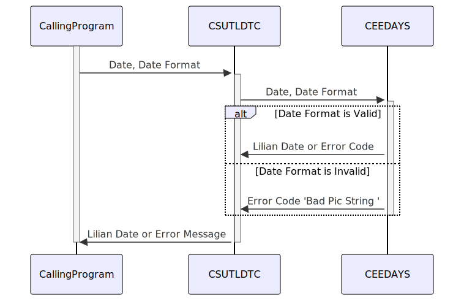

Gerado em: 1º de outubro de 2024
Aplicativo CardDemo: Utilitário de Conversão de Data (CSUTLDTC)
Descrição Resumida:
Este programa utilitário, CSUTLDTC, é um componente crítico do aplicativo CardDemo. Sua função principal é converter datas de vários formatos legíveis por humanos, como “MM-DD-YYYY”, para o formato Lilian. Este formato, uma representação numérica da data, é essencial para que os computadores realizem cálculos e comparações com eficiência.
Histórias de Usuário:
Como administrador do sistema, preciso de uma maneira confiável de converter datas de diferentes formatos em um formato padrão para processamento de dados e geração de relatórios eficientes.
Épico Relacionado:
9 - Utilitários do Sistema
Requisitos Funcionais:
- Receber Data e Formato: O programa deve aceitar duas entradas: a string de data a ser convertida e o formato correspondente da data de entrada (por exemplo, “MM-DD-YYYY”, “DD-MM-YYYY”).
- Validar Formato de Data: Deve verificar se o formato da data de entrada é reconhecido e suportado pelo sistema. Se o formato for inválido, o programa deve gerar uma mensagem de erro "Bad Pic String " e sair.
- Validar Data: O programa deve verificar a validade da própria data de entrada. Por exemplo, 30 de fevereiro é uma data inválida e deve ser sinalizada como "Invalid month ".
- Converter para o Formato Lilian: Se a data e o formato forem válidos, o programa deverá converter a data de entrada para o formato Lilian, uma representação numérica da data.
- Retornar Data Lilian ou Erro: Após a conversão bem-sucedida, retorne a data Lilian. Se alguma validação falhar, o programa deve retornar uma mensagem de erro descritiva indicando o problema.
Requisitos Não Funcionais:
- Precisão: O processo de conversão deve ser preciso para evitar discrepâncias em cálculos relacionados à data ou inconsistências de dados.
- Desempenho: O processo de conversão deve ser eficiente para evitar impactar o desempenho de outros processos do sistema, especialmente ao lidar com grandes volumes de dados.
- Manutenibilidade: O código deve ser bem estruturado e documentado para facilitar a manutenção e as atualizações.
Critérios de Aceitação:
- Conversão Bem-Sucedida: Dada uma data e formato válidos, o programa deve converter a data para o formato Lilian com precisão.
- Tratamento de Formato de Data Inválido: Dado um formato de data inválido, o programa deve gerar uma mensagem de erro "Bad Pic String ".
- Tratamento de Data Inválida: Dada uma data inválida, o programa deve gerar uma mensagem de erro indicando o problema específico (por exemplo, "Invalid month ").
- Relato de Erros: Todas as mensagens de erro devem ser claras, concisas e úteis para solução de problemas.
Melhorias de Código:
- Tratamento de Erros Centralizado: Implemente uma rotina de tratamento de erros centralizada para gerenciar todas as condições de erro de forma consistente e sustentável.
- Mensagens de Erro Aprimoradas: Forneça mensagens de erro mais informativas, incluindo a data ou formato inválido, para ajudar na depuração mais rápida.
- Log: Incorpore recursos de log para registrar conversões bem-sucedidas, erros e outras informações relevantes para auditoria e solução de problemas.
Melhorias de Segurança:
Embora este utilitário não lide diretamente com dados confidenciais, considere o seguinte:
- Validação de Entrada: Implemente validação de entrada rigorosa para evitar qualquer dado inesperado ou tentativas de injeção de código malicioso.
- Log Seguro: Se os logs forem implementados, certifique-se de que sejam armazenados com segurança e que o acesso seja restrito apenas ao pessoal autorizado.
Diagrama Conceitual:

–Made by “Smart Engineering” (by Compass.UOL)–